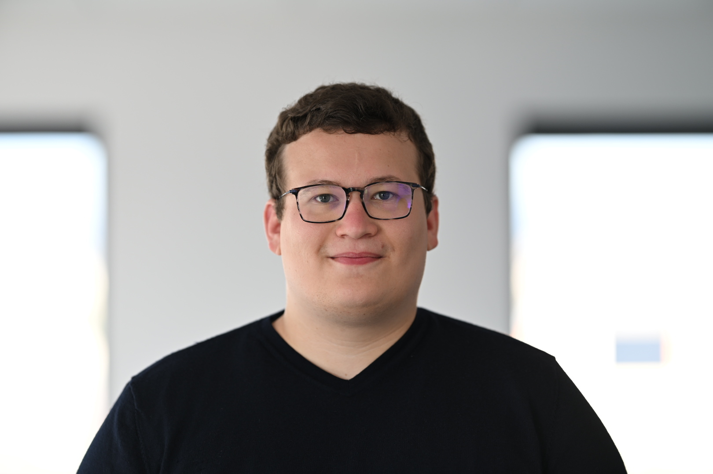

Nils Malmberg
Ingénieur en génie énergétique et nucléaire — double diplômé Grenoble INP Phelma & Politecnico di Milano. Passionné de cuisine, bricolage, programmation et impression 3D.

Ingénieur du nucléaire, bidouilleur du weekend
🎓 Formation & Parcours
Diplômé de Grenoble INP Phelma en génie énergétique et nucléaire, avec un double diplôme au Politecnico di Milano. Après deux années de CPGE (MPSI/PSI*) à Reims, j'ai développé de solides bases en physique et simulation numérique.
💻 Tech & Développement
Passionné de programmation depuis longtemps, je travaille majoritairement en Python. J'ai également des connaissances en C/C++ et mon prochain projet est d'apprendre le Rust. Je m'intéresse beaucoup à ce qui touche à la Data Science, au Machine Learning, aux NAS et à l'auto-hébergement de services comme les LLM.
🖨️ Conception & Fabrication
Je conçois des pièces sur Fusion 360 et les fabrique par impression 3D. Ce hobby m'a conduit à modéliser un NAS complet basé sur une carte Raspberry Pi et sur un OS open source.
🏒👨🍳 Autres hobbies
J'ai pratiqué le hockey sur glace pendant une dizaine d'années. Je m'intéresse aussi à la gastronomie.
Me contacter
Pour toute question ou opportunité professionnelle, n'hésitez pas à me contacter via LinkedIn.
LinkedIn - Nils Malmberg